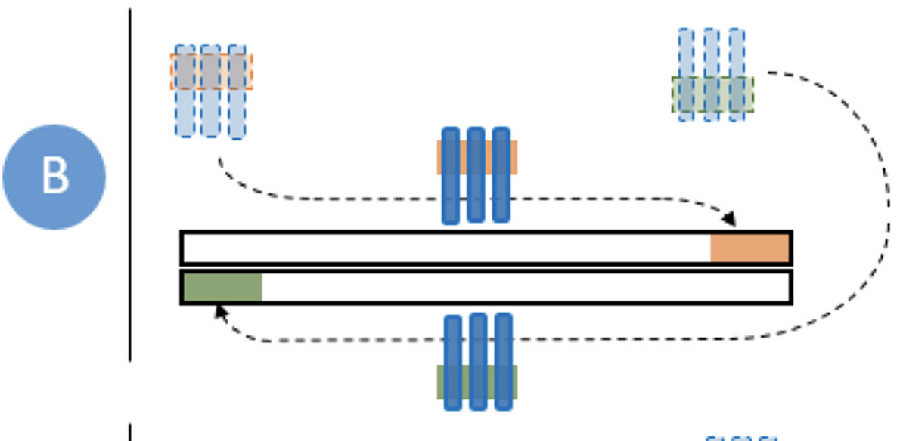
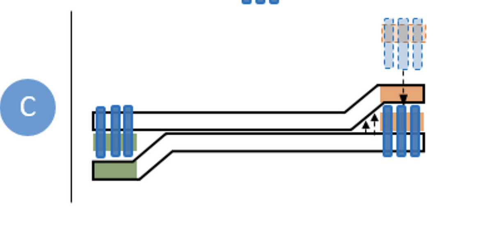
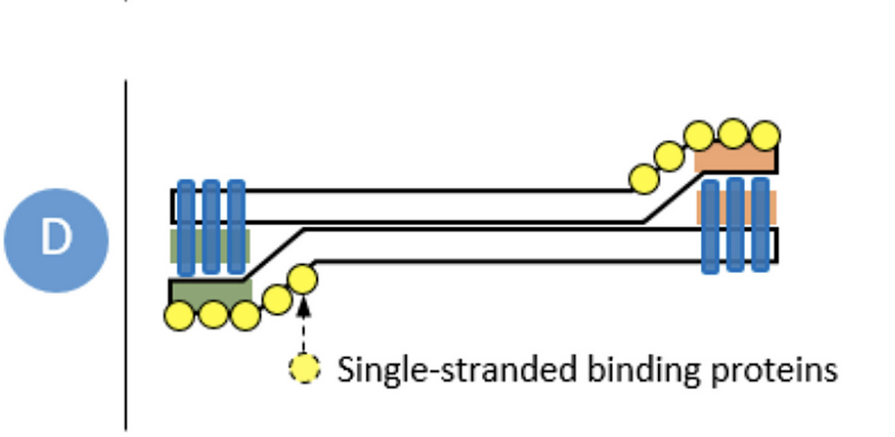
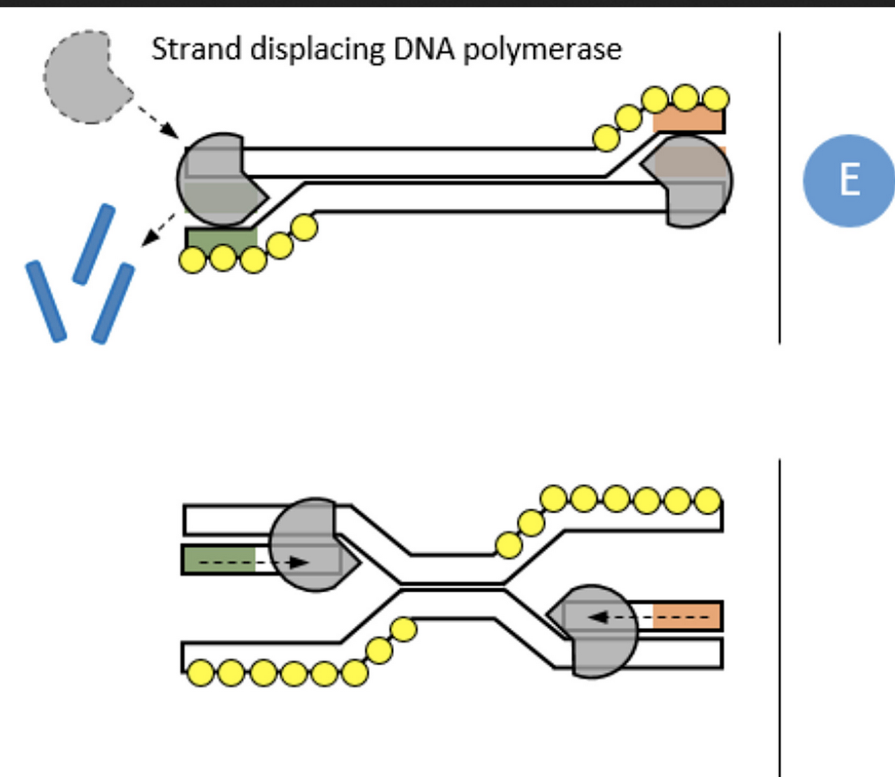
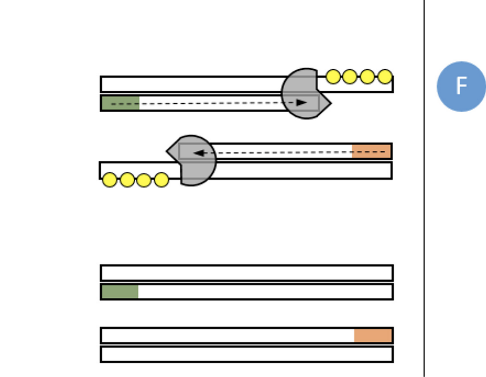

Nanopore amplicon data analysis
PCR is great, but requires thermocycling and thus a reliable power supply
Recombinase polymerase amplification (RPA)
- Primers 30-35bp - can also use PCR primers
- Amplify targets up to 1.5kbp - better suited to 100-200bp
- Can operate at 22-45°C - 37-42°C optimal
- Incubation 3-20 minutes dependent on starting DNA
- Can be used on DNA, cDNA, mDNA, RNA, and miRNA
- Highly specific - 100% for target sequences

Complex scans DNA for homologous sequences

Recombinase displaces dsDNA to insert primers

Single-stranded binding proteins stabilise the displaced DNA chain

Recombinase disassembles, leaving 3'-end of primers accessible to polymerase

Amplification via cyclic repetition of the process
Target genes
- eis - Kanamycin
- embB - Ethambutol
- rrs - Amikacin
- rv0678 - BDQ & CFZ
- fabG1 - Isoniazid
- gyrA - FLQs
- rpoB - Rifampicin
- ethA - Ethionamide
- rplC - Linezolid
- katG - Isoniazid
- gidB - Streptomycin
- inhA - Isoniazid
- rrl - Linezolid
- pncA - Pyrazinamide
- rpsL - Streptomycin
- tlyA - Capreomycin